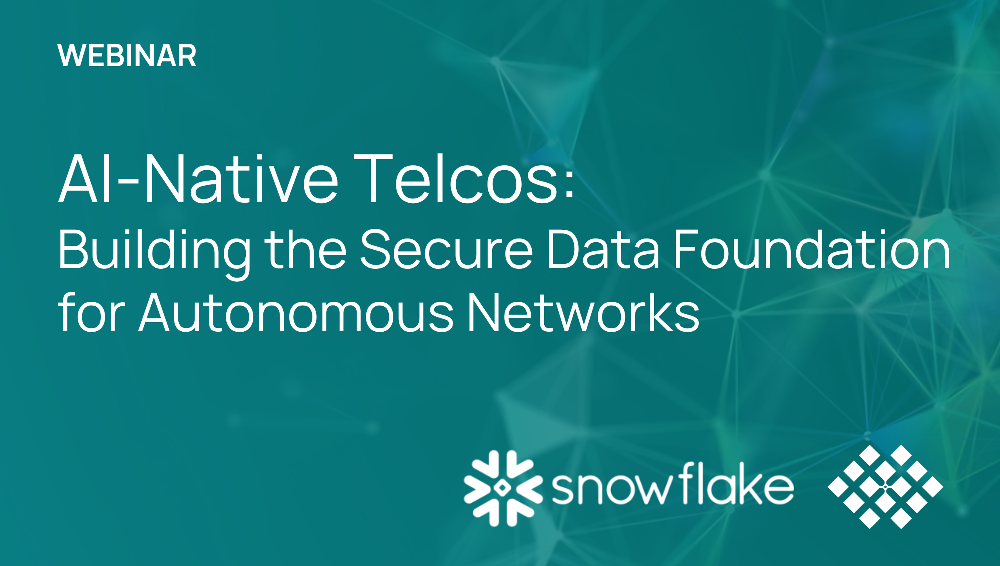
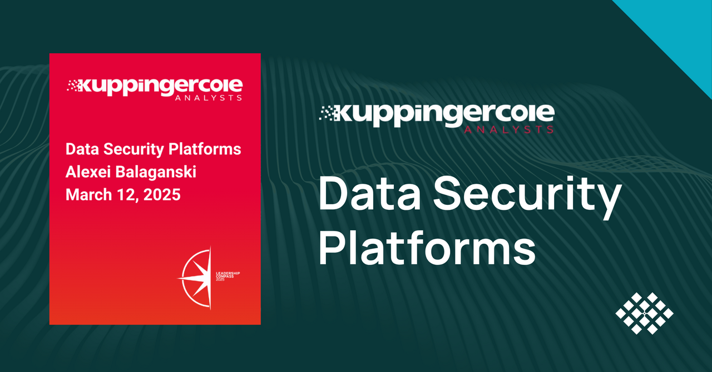

TrustLogix Thought Leadership
Dive into our comprehensive library of blogs, reports, webinars, and more. Discover valuable insights and tools to enhance your data security and compliance strategies.
Featured Resources
Unlock innovation with our latest insights and thought leadership.

Securing a Modern Data Mesh in the Snowflake Data Cloud
A global mobility vendor used TrustLogix to modernize data, protect sensitive information, and improve compliance and analytics.
Read More
Why Security Teams Are Replacing IBM Guardium with TrustLogix
IBM Guardium's agent-based architecture wasn't built for cloud. See how TrustLogix replaces legacy data activity monitoring with a single, agentless platform covering on-prem, hybrid, and cloud.
Read More
Solution Brief: Preemptive Data Security for the Age of AI Agents
Stop AI data leaks before they happen. TrustAI by TrustLogix provides preemptive security and JIT access control for AI agents, ensuring PII/PHI protection across multi-cloud environments. Secure your AI innovation today.
Read More
About TrustLogix
Enterprises need to move faster with AI, but fragmented access and inconsistent data controls slow progress and add risk. TrustLogix gives teams unified, secure access to the data that drives AI—so innovation moves quickly, safely.
Read More
Data Security for Agentic AI
See how data and security leaders can govern AI data access with clarity and speed. Understand the real risks, the new architectural requirements, and the practical steps enterprises are using today to make AI safe at scale.
Read More
Get the Gartner Report: Use Agile, Adaptive, AI-Ready (3A) Data Security Governance to Secure Shadow AI
This recent Gartner® report outlines a practical framework for evolving data security controls to match AI's pace: just-in-time access, automated scanning, adaptive policy enforcement, and AI agent monitoring. Required reading for CISOs navigating the gap between AI adoption and data security.
Read More
AI Agents Are Your New Blind Spot: A CISO's Framework for Governing Agentic AI - GigaOm
GigaOm's independent analyst brief gives CISOs a practical framework for evaluating AI agent data security, covering identity propagation, least-privilege enforcement, audit at scale, and continuous monitoring.
Read More
AI Data Security: Risks, Best Practices & How to Protect Your AI Systems
Learn how to secure data and AI assets with best practices for AI/ML risks, LLM protection, and future-proofing AI security.
Read More
Securing Your AI Agents Before They Become Your Biggest Liability
Learn why AI agents are creating a "governance gap" in the enterprise. GigaOm’s Whit Walters shares 5 essential capabilities to secure your AI infrastructure and prevent agents from becoming a major data liability. Watch the full breakdown.
Watch Now
Closing the AI Velocity Gap: Why Enterprises Need a Proactive Trust Layer
Is the race for AI ROI forcing your organization to compromise on security? In this featured session, Scott Raynovich, Principal Analyst at Futuriom, and Ron Longo, CEO of TrustLogix, discuss how to eliminate the "Velocity Gap"—the friction between the urgent need to deploy AI and the complex task of securing it.
Watch Now
Building the Policy Control Plane: The Architecture Behind TrustAI
Learn how TrustLogix's unified Policy Control Plane governs autonomous AI agents at machine speed—enabling innovation while protecting sensitive enterprise data.
Watch Now
Data Security for AI Agents with TrustAI
Organizations can confidently scale AI initiatives by securing sensitive data, controlling AI agent access, and monitoring how data is used.
Watch Now
Resilient Data Security in Multi-Cloud Environments
Explore resilient multi-cloud data security with TrustLogix CEO Ganesh Kirti on Tech4Sight—Zero Trust, access control & AI.
Watch Now
Secure Data Access from Source to Dashboard
Extend Snowflake & Databricks access controls to Power BI with TrustAccess—no code, no duplication, no data exposure.
Watch Now
TrustLogix-Collibra Integration
See how TrustLogix integrates with Collibra to simplify Snowflake data security, policy creation, and access governance.
Watch Now
Self-Service Analytics Without the Chaos: Governing Insights at Scale
TrustLogix Field CTO Simon Thornell joins industry experts for a DBTA roundtable on delivering governed, analytics-ready data at scale.
Watch Now
AI-Native Telcos: Building the Secure Data Foundation for Autonomous Networks
In this webinar, experts from Ericsson, Snowflake, and TrustLogix explore how telecom providers can build secure, scalable data foundations for autonomous networks.
Watch Now
Managing Data Sharing, Data Security and Entitlements in Financial Markets
Financial leaders share strategies for balancing data security, innovation, and access in this expert webinar.
Watch NowFeatured Blog Posts
Stay informed on data security and access control trends.

Why Many AI Companies Can't Solve Your Agentic AI Security Problem. But TrustLogix Can.
Why do so many AI security vendors fail in real enterprise environments? TrustLogix CEO Ron Longo explains what to ask before you buy — and why it matters.
Read More
Every Enterprise AI Conversation Has a Data Security Problem. Here's How We're Helping Partners Solve It.
TrustLogix Head of Partnerships Thomas St. Onge announces the TrustLogix Partner Program, built to help technology and services partners win the enterprise AI security opportunity with dedicated tooling, joint go-to-market support, and a free 30-day proof of concept.
Read More
After the Claude Code Leak: Why Enterprises Desperately Need a Kill Switch for AI Agent Data Access
The Claude Code leak exposed a critical gap: enterprises have no kill switch for AI agent data access. Learn how TrustAI provides real-time control at the data layer.
Read MoreFor AI Agents to Work at Scale, Access Context Can't Be Optional
When AI agents access enterprise data without security context, risk accumulates fast. TrustLogix Field CTO Simon Thornell on why the context layer and security context must work together — and what happens when they don't.
Read MoreNow in Public Preview: Securing Agentic AI with TrustLogix TrustAI and MCP
Leveraging MCP, TrustAI replaces fragmented, hardcoded agent connectors with a standardized security control plane that centralizes authentication, externalizes policy enforcement, and delivers unified auditability across all AI-to-data interactions.
Read More
Strengthen Data Security with Snowflake Trust Center and TrustLogix
TrustLogix’s new Trust Center integration lets Snowflake users expand their data security with deeper visibility, more fine-grained access controls, and an AI-driven workflow where security teams and data stewards can collaborate to remediate issues much faster.
Read More
TrustAI: The Non-Negotiable Data Security Layer for AI Agents
Don't let AI agent data security be a barrier to unlocking the full potential of AI. With TrustAI by TrustLogix, you can confidently drive innovation, knowing your most valuable asset, your data, is always protected, governed, and compliant.
Read More
KuppingerCole Names TrustLogix a Leader in Data Security Platforms: Validating Enterprise Trust
Maintaining consistent access policies has become complex and siloed, with data dispersed across various cloud environments, warehouses, and analytics tools.
Read More
Empowering Healthcare Enterprise: Achieve Dynamic Access and Robust Security
We'll delve into how TrustLogix helps Healthcare organizaton meet Data Access Control needs.
Read MoreRBAC or ABAC: Which is Better? Enforcing Risk-Adaptive Access Control in the Cloud
Which is better RBAC or ABAC? Learn how to implement risk-adaptive access control best suited to the demands of your organization's data workloads.
Read More
What Identity Management Teaches CSOs/CDOs about Data-Centric Security
20 years ago, identity proliferation launched Identity Management. Just so, data proliferation today requires a new Data-Centric Security approach.
Read More
How the TrustLogix Platform Simplifies Data Security in Snowflake
Learn how TrustLogix, a Snowflake Data Cloud Partner, helps teams monitor data usage, identify security issues, and more with access control policies.
Read MoreExplore Our Production Documentation
Access comprehensive guides and resources to enhance your understanding of our platform's capabilities.
Documentation Portal
Experience TrustLogix in Action
Schedule a call to discover how TrustLogix can accelerate your AI initiatives with faster, safer data access.